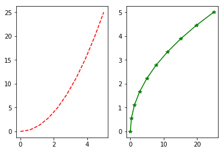
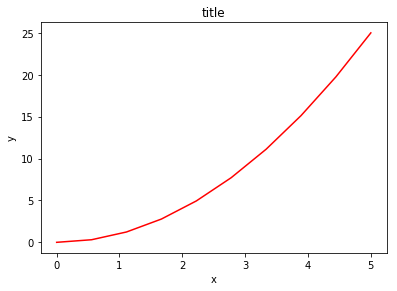
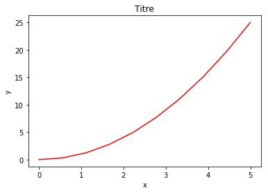

Ahmed Ammar et Hassen Ghalila
Faculté des Sciences de Tunis, Université de Tunis El Manar
#Juste pour savoir la dernière fois que cela a été exécuté:
import time
print(time.ctime())
Mon May 8 17:29:03 2017
Matplotlib est une excellente bibliothèque graphique 2D et 3D pour générer des figures scientifiques. Voici quelques-uns des nombreux avantages de cette bibliothèque:
Vous trouverez plus d’informations, y compris une documentation complète et une vaste galerie d’exemples, à la page Web de Matplotlib: http://matplotlib.org/
De nombreux utilisateurs de matplotlib sont souvent confrontés à la question: “Je veux faire un graphe qui a X avec Y dans la même figure, mais il doit ressembler à Z“. Bonne chance d’obtenir une réponse, à partir d’une recherche sur Internet avec cette requête. C’est pourquoi la galerie est si utile, car elle montre la variété des façons dont on peut faire des parcelles. Parcourez la galerie, cliquez sur n’importe quelle figure qui comporte des éléments de ce que vous voulez voir le code qui l’a généré. Bientôt, vous serez comme un chef, mélangez et associez des composants pour produire votre chef-d’œuvre!

La Figure est le conteneur de niveau supérieur dans cette hiérarchie. C’est la fenêtre générale / page sur laquelle tout est dessiné. Vous pouvez avoir plusieurs chiffres indépendants et Figures peuvent contenir plusieurs “Axes”.
La plupart des octets de traçage sur Axes. Les axes sont effectivement la zone sur laquelle nous traçons des données et des ticks / labels / etc associés. Habituellement, nous configurons un Axes avec un appel à subplot (qui place les Axes sur une grille ordinaire), donc dans la plupart des cas, Axes et Subplot sont synonymes.
Chacun Axes a un XAxis et un YAxis. Ceux-ci contiennent les tiques, les emplacements des repères, les étiquettes, etc. Dans ce tutoriel, nous contrôlons principalement les tiques, les étiquettes de repères et les limites de données à travers d’autres mécanismes, de sorte que nous ne toucherons pas les éléments individuels de Axis autant. Cependant, il convient de mentionner ici pour expliquer d’où vient le terme «Axes».
Pour commencer à utiliser Matplotlib dans l’environnement IPython Notebook, nous devons configurer l’interaction entre Matplotlib et IPython afin qu’ils puissent bien jouer ensemble. Ceci est accompli avec la commande suivante:
%matplotlib inline
Cela configure IPython pour jouer avec la bibliothèque %matplotlib; Le mot-clé inline spécifie que la sortie des tracés Matplotlib doit être affichée directement dans le même ordinateur, juste en dessous de la cellule d’entrée correspondante. Toutefois, il ne importe pas et ne nomme pas l’espace de noms. Pour ce faire, les importations standard sont toujours requises pour utiliser Matplotlib:
import matplotlib
import numpy as np
import matplotlib.pyplot as plt
Pour une utilisation interactive (mais pas pour être utilisé à partir de scripts), il existe une option de commodité qui encapsule toutes les étapes ci-dessus:
# Inclure automatiquement tous les noms du paquet `pylab`
%pylab inline
Populating the interactive namespace from numpy and matplotlib
Comme il ressort du message que IPython affiche, cela équivaut à l’exécution de% matplotlib, suivie d’une séquence d’importations. Les importations exactes effectuées peuvent être trouvées dans la documentation de %pylab:
%pylab?
Voici un aperçu visuel simplifié des types de graphiques les plus couramment utilisés de matplotlib. Passons à travers ces derniers, et nous en reparlerons plus en détail. En cliquant sur l’une de ces images, vous mènera au code qui les a générés. Nous ignorerons cela pour l’instant, mais nous nous efforçons de passer en revue plus tard.


Commençons par dessiner une figure simple à l’aide de la syntaxe de traçage MATLAB.
D’abord, nous définissons les données que nous souhaitons tracer:
x = linspace(0, 5, 10)
y = x ** 2
Maintenant, nous faisons la figure:
figure()
plot(x, y, 'r')
xlabel('x')
ylabel('y')
title('Titre')
show()

La plupart des fonctions liées au traçage dans MATLAB sont couvertes par le module pylab, par exemple en sélectionnant des couleurs et en utilisant des subplots:
subplot(1,2,1)
plot(x, y, 'r--')
subplot(1,2,2)
plot(y, x, 'g*-');

La bonne chose à props pylab de syntaxe à la MatLab qu’il est facile de commencer avec si vous êtes familiarisé avec Matlab, et il a un minimum de codage généraux pour des figures simples.
Cependant, je vous encourage pas d’utiliser l’API (Application Programming Interface) compatible à Matlab pour quoi que ce soit, sauf pour les figures les plus simples.
Au lieu de cela, je recommande l’apprentissage et l’utilisation de traçage orienté objet de l’API de matplotlib. Il est remarquablement puissant pour les figures avancées, avec des subplots, des inserts et d’autres composants, il est très agréable de travailler.
Pour utiliser l’API orientée objet, nous commençons beaucoup comme dans l’exemple précédent, mais au lieu de créer une nouvelle figure mondiale instanc, e nous stockons une référence à l’occurrence de la figure nouvellement créée dans la variable fig, et à partir de celle-ci Nous créons une nouvelle axes instance axes à l’aide de la méthodeadd_axes dans l’occurrence de la classe Figure fig:
fig = plt.figure()
axes = fig.add_axes([0.1, 0.1, 0.8, 0.8]) # gauche, bas, largeur, hauteur (plage de 0 à 1)
axes.plot(x, y, 'r')
axes.set_xlabel('x')
axes.set_ylabel('y')
axes.set_title('title');

Même si un peu plus de code est impliqué, l’avantage est que nous avons maintenant le contrôle total de l’emplacement des axes de tracé, et nous pouvons facilement ajouter plus d’un axe à la figure.
fig = plt.figure()
axes1 = fig.add_axes([0.1, 0.1, 0.8, 0.8]) # main axes
axes2 = fig.add_axes([0.2, 0.5, 0.4, 0.3]) # inset axes
# Figure principale
axes1.plot(x, y, 'r')
axes1.set_xlabel('x')
axes1.set_ylabel('y')
axes1.set_title('Titre')
# Figure insérée
axes2.plot(y, x, 'g')
axes2.set_xlabel('y')
axes2.set_ylabel('x')
axes2.set_title('Titre inséré')
<matplotlib.text.Text at 0x7f24fe2970f0>

Si nous ne voulons pas expliquer pourquoi nos axes de tracé sont placés dans la toile de figure, nous pouvons utiliser l’un des nombreux gestionnaires de disposition d’axe dans matplotlib. Mon préféré est subplots, qui peut être utilisé comme ceci:
fig, axes = plt.subplots()
axes.plot(x, y, 'r')
axes.set_xlabel('x')
axes.set_ylabel('y')
axes.set_title('Titre')
<matplotlib.text.Text at 0x7f24fe1b5ba8>

fig, axes = plt.subplots(nrows=1, ncols=2)
for ax in axes:
ax.plot(x, y, 'r')
ax.set_xlabel('x')
ax.set_ylabel('y')
ax.set_title('title');

C’était facile, mais ce n’est pas si joli avec des axes et des étiquettes superposés, n’est-ce pas?
Nous pouvons nous occuper de cela en utilisant la méthode fig.tight_layout, qui ajuste automatiquement les positions des axes sur la toile de la figure afin qu’il n’y ait pas de contenu superposé:
fig, axes = plt.subplots(nrows=1, ncols=2)
for ax in axes:
ax.plot(x, y, 'r')
ax.set_xlabel('x')
ax.set_ylabel('y')
ax.set_title('Titre')
fig.tight_layout()

Utilisons un peu de ce que nous avons appris. Pouvez-vous reproduire cette figure?

Voici les données et une partie du code pour vous aider à démarrer.
# %load exercises/exercice_Mpl1.py
import numpy as np
import matplotlib.pyplot as plt
# Essayez de reproduire la figure indiquée dans images/exercise_Mpl1.png
# Nos données ...
x = np.linspace(0, 10, 100)
y1, y2, y3 = np.cos(x), np.cos(x + 1), np.cos(x + 2)
titres = ['Signal 1', 'Signal 2', 'Signal 3']
fig, axes = plt.subplots(nrows=3)
fig.tight_layout() #Ajuster en sorte que les subplots remplissent la figure
# Pouvez-vous comprendre ce qu'il faut faire ensuite
#pour tracer x vs y1, y2 et y3 sur une figure?

Matplotlib permet de spécifier le rapport d’aspect, le DPI et la taille de la figure lorsque l’objet Figure est créé, en utilisant les arguments de mots-clésfigsize et dpi. figsize est un tuple avec largeur et hauteur de la figure en pouces, et dpi est le point par pouce (pixel par pouce). Pour créer une figure avec une taille 800 de 400 pixels, nous pouvons:
fig = plt.figure(figsize=(8,4), dpi=100)
<matplotlib.figure.Figure at 0x7f24fe0716d8>
Les mêmes arguments peuvent également être transmis aux gestionnaires de mise en page, tels que la fonction subplots.
fig, axes = plt.subplots(figsize=(12,3))
x = linspace(0, 5, 10)
y = x ** 2
axes.plot(x, y, 'r')
axes.set_xlabel('x')
axes.set_ylabel('y')
axes.set_title('Titre');

Pour enregistrer une figure, un fichier, nous pouvons utiliser la méthode savefig dans la classe Figure.
fig.savefig("filename.png")
Ici, nous pouvons également spécifier le DPI et choisir entre différents formats de sortie.
fig.savefig("filename.png", dpi=200)
fig.savefig("filename.pdf")
Matplotlib peut générer des sorties de haute qualité dans un nombre de formats, y compris PNG, JPG, EPS, SVG, PDF. Pour les documents scientifiques, utilisez le PDF chaque fois que possible (compilez les documents LaTeX avec pdflatex, qui peut inclure des fichiers PDF en utilisant la commandeincludegraphics).
Maintenant que nous avons couvert les bases de la façon de créer une figure et d’ajouter des exemples d’axes sur le canevas, regardons comment décorer une figure avec des titres, des étiquettes d’axe et des légendes:
Titres des figures
Un titre peut être ajouté à chaque instance d’axe d’une figure. Pour définir le titre, utilisez la méthode set_title dans l’instance des axes:
ax.set_title("title")
<matplotlib.text.Text at 0x7f24fdfbb278>
étiquettes des axes
De même, en utilisant les méthodes set_xlabel etset_ylabel, nous pouvons définir les étiquettes des axes X et Y:
ax.set_xlabel("x")
ax.set_ylabel("y")
<matplotlib.text.Text at 0x7f24fe01a7b8>
Légendes
Les légendes sur les courbes d’une figure peuvent être ajoutées de deux façons. La première méthode consiste à utiliser la méthode legend de l’objet axe et à passer une liste / un tuple de textes de légende pour les courbes précédemment ajoutées:
ax.legend(["courbe 1", "courbe 2", "courbe 3"]);
La méthode décrite ci-dessus suit l’API MATLAB. Il est quelque peu propice aux erreurs et indéfinissable si les courbes sont ajoutées ou supprimées de la figure (ce qui entraîne une mauvaise étiquette utilisée pour une mauvaise courbe).
Une meilleure méthode est d’utiliser l’argument de mot-clé label = "label text" lorsque les tracés d’autres objets sont ajoutés à la figure, puis en utilisant la méthodelegend sans argument pour ajouter la légende:
ax.plot(x, x**2, label="courbe 1")
ax.plot(x, x**3, label="courbe 2")
ax.legend()
<matplotlib.legend.Legend at 0x7f24fdf36940>
L’avantage de cette méthode est que si les courbes sont ajoutées ou supprimées de la figure, la légende est automatiquement mise à jour en conséquence.
La fonction legend prend et l’argument de travail optionnel loc qui peut être utilisé pour spécifier l’endroit dans lequel figure la légende à dessiner. Les valeurs autorisées de loc sont des codes numériques pour les différents endroits où la légende peut être dessinée. Voir http://matplotlib.org/users/legend_guide.html#legend-location pour plus de détails. Certaines alternatives les plus courantes sont:
ax.legend(loc=0) # laisser matplotlib décider de la position optimale
ax.legend(loc=1) # coin supérieur droit
ax.legend(loc=2) # coin supérieur gauche
ax.legend(loc=3) # coin inférieur gauche
ax.legend(loc=4) # coin inférieur droit
# .. beaucoup d'autres options sont disponibles
<matplotlib.legend.Legend at 0x7f24fd6e8940>
La figure suivante montre comment utiliser le titre de la figure, les étiquettes d’axe et les légendes décrites ci-dessus:
fig, ax = subplots()
ax.plot(x, x**2, label="y = x**2")
ax.plot(x, x**3, label="y = x**3")
ax.set_xlabel('x')
ax.set_ylabel('y')
ax.set_title('Titre')
ax.legend(loc=2); # coin supérieur gauche

La figure ci-dessus est fonctionnelle, mais elle ne correspond pas (encore) aux critères d’un chiffre utilisé dans une publication. D’abord et avant tout, nous devons avoir le texte formaté LaTeX, et deuxièmement, nous devons pouvoir ajuster la taille de la police pour apparaître directement dans une publication.
Matplotlib bénéficie d’un excellent support pour LaTeX. Tout ce que nous devons faire, c’est d’utiliser des signes en dollars, encapsuler LaTeX dans n’importe quel texte (légende, titre, étiquette, etc.). Par exemple, "$y = x^3$".
Mais ici, nous pouvons rencontrer un problème légèrement subtil avec le code LaTeX et les chaînes de texte Python. Dans LaTeX, nous utilisons fréquemment la barre oblique inverse dans les commandes, par exemple \alpha pour produire le symbole $\alpha$. Mais la barre oblique inverse a déjà un sens dans les chaînes Python (le caractère du code d’échappement). Pour éviter que Python ne gâche notre code de latex, nous devons utiliser des chaînes de texte “brutes”. Les chaînes de texte brutes sont prépendues avec et ‘r’, comme r"\alpha" ou r'\alpha' au lieu de "\alpha"ou '\alpha'.
generated by haroopad